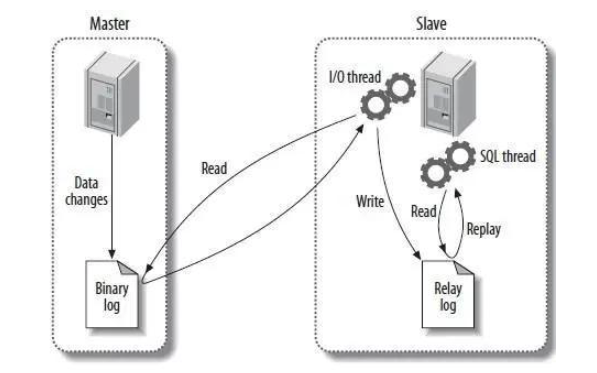
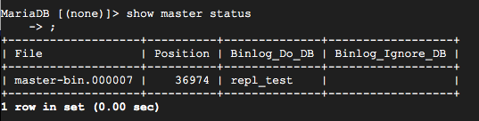
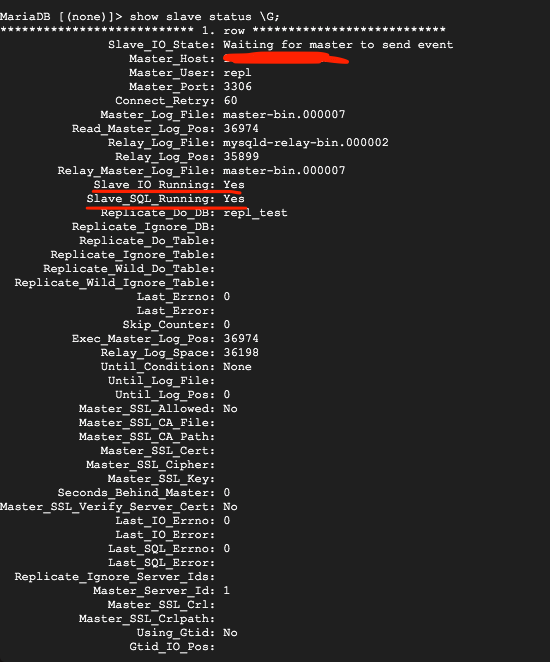
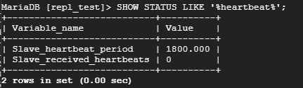
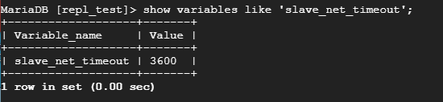
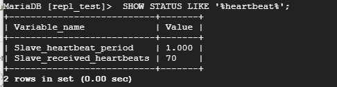
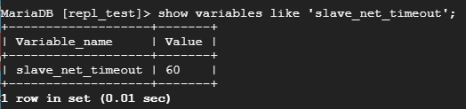

前言
上次說明完用gce架MariaDB，接下來要研究實作兩台database做讀寫分離的架構，上一篇回顧。
一開始設定讀寫分離架構成功，但遇到一個問題：如果寫資料庫閒置10幾分鐘都沒有被寫入之後，讀取的資料庫就停止同步了，要隔大概幾個小時讀的資料庫才會恢復同步….
正文會紀錄主從設定過程。
開始之前
開好兩台mariaDB，正文開始設定兩台變成主從架構。
兩台database資料同步的原理？

(圖片來源：https://read01.com/zh-tw/BJ368O7.html#.Yj_cnjdBzMI)
簡單說：data被寫到binary log裡面，slave就會有一個線程去執行把資料寫到自己slave這邊的log，達到複製資料的效果，此時使用者要讀取資料時就讀取slave的database。
正文：開始設定
1. 開啟主mariaDB資料庫配置檔案
/etc/mysql/mariadb.conf.d/50-server.cnf檔案
2. 在檔案新增
1 | server-id=1 #server id每台要不同，不能重複 |
3. 重啟服務: server mysql restart
4. 檢查配置，進入db查看master狀態:
1 | sudo mysql -u root |
(一開始設定好File名應該是這樣:master-bin.000001)，這樣表示有設定完成。

5. 到從mariaDB資料庫配置檔案 /etc/mysql/mariadb.conf.d/50-server.cnf檔案
1 | server-id=2 |
6. 一樣，重啟服務: server mysql restart
7. 建立兩個資料庫的關聯，在主資料庫建立一個操作主從同步資料庫的使用者
1 | create user repl; |
8. 從資料庫執行：
1 | change master to master_host='主xxx.xxx.xxx.xx', |
9. 檢視slave狀態mysql[(none)]> show slave status \G;
\G表示換行顯示（美化顯示)
slave_IO_Running & slave_SQL_Running都YES就有連線了

10. 測試資料庫有沒有成功同步
記得要master資料庫寫入，slave只負責讀取，如果slave不小心寫入就會報錯
在master mariadb裡創database，slave也會同步了
1 | create database testsplit; |
停止同步問題的研究過程
- 看MariaDB官方文件重新設定 -> 失敗
- google找其他解決方案，設定config檔 -> 失敗
- 設定 semi-sync -> 失敗
- heartbeat設定 ＝>
成功
Heartbeat設定
Heartbeat設定之前，Heartbeat是什麼
有兩個重要的東西需一起設定
MASTER_HEARTBEAT_PERIOD： master沒有更新數據的期間，master會定期發送心跳包給slave，用來確保master是正常運作的，服務沒有掛掉。而設定Heartbeat就是設定多長時間發送一個心跳包。
SLAVE_NET_TIMEOUT: slave在多久沒有收到任何數據後(包含binlog or heartbeat)會認為是與master連線斷開了(timeout)而重新連線。而設定SLAVE_NET_TIMEOUT就是設定多長時間重新連線。
如果單純把slave_net_timeout設得很短而沒設定到HEARTBEAT，則會造成master沒有數據更新時，slave就頻繁重新連線。
開始設定
原本的問題：資料庫閒置10幾分鐘都沒有被寫入之後，讀取的資料庫就會停止同步。
接下來會發現原本的heartbeat期間設定為1800（秒），也就是master30分鐘才會有一個心跳包。

而slave_net_timeout原本是一小時(3600秒)才會重新連線一次。

1 |
|


這樣就完成了設定。
心得
遇到heartbeat這個坑，卡了兩天，主要是沒有聽過這個詞的話不會用這個關鍵字，也沒有查到相關的解法，後來跟主管討論被提出來，試著去設定發現真的是它的問題而我才得救了QQ，本來要找其他的實作方法(Galera Cluster)，也有設定成功，只是原理還需要再了解一下，下篇文章就寫吧。
資料來源:
[教學][Ubuntu 架站] 如何在 Google Cloud Platform 架設 Ubuntu 伺服器
在 Ubuntu 18.04上安裝 MariaDB
worked=> How To Install MariaDB on Ubuntu 20.04
worked => 資料庫讀寫分離，主從同步實現方法
官方文件 - Setting Up Replication
worked=> What is heartbeat replication monitoring? [closed]
Actively monitoring replication connectivity with MySQL’s heartbeat
MySQL主從復制配置心跳功能介紹
slave_net_timeout, MASTER_HEARTBEAT_PERIOD, MASTER_CONNECT_RETRY,以及 MASTER_RETRY_COUNT设置和查看